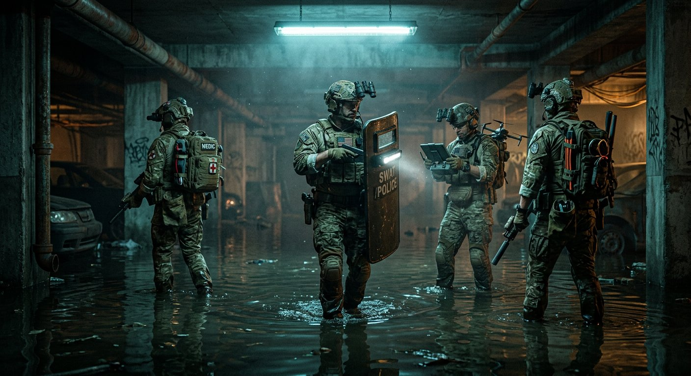
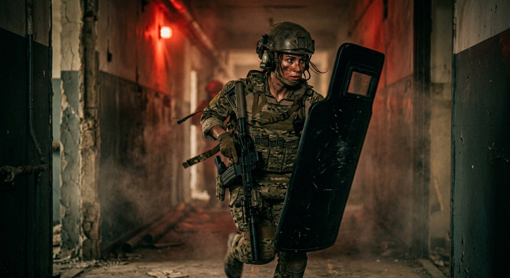
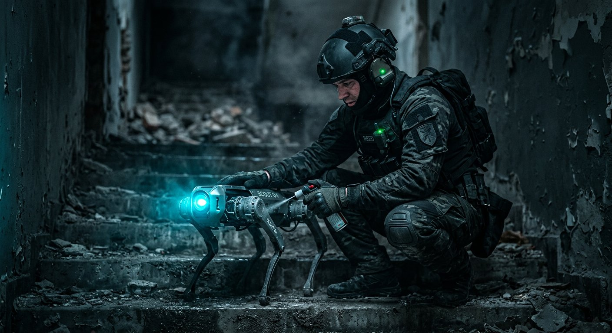
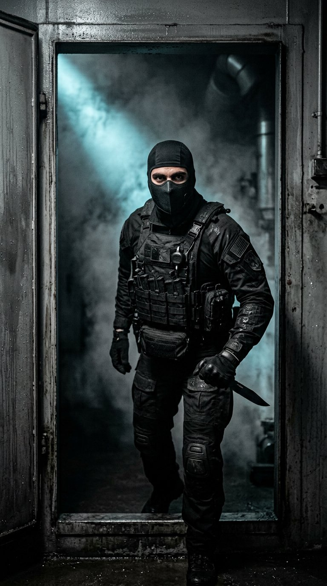
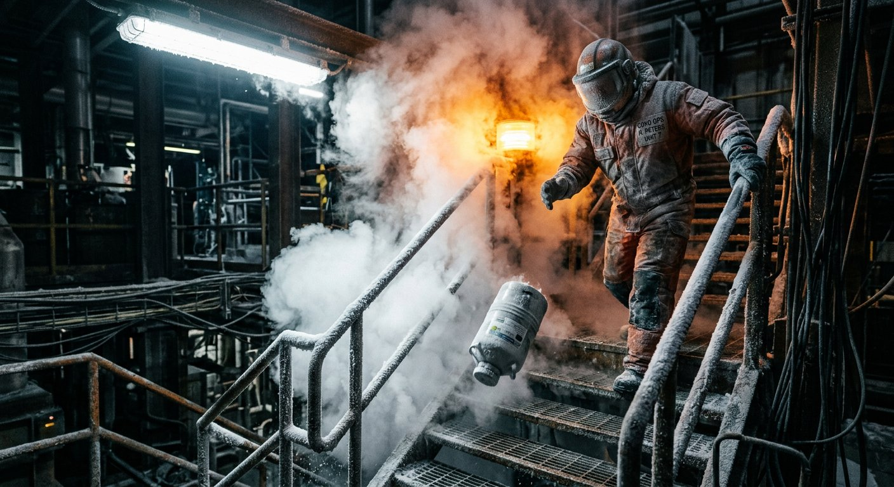
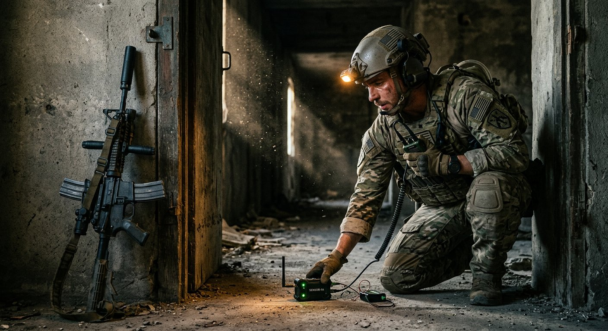
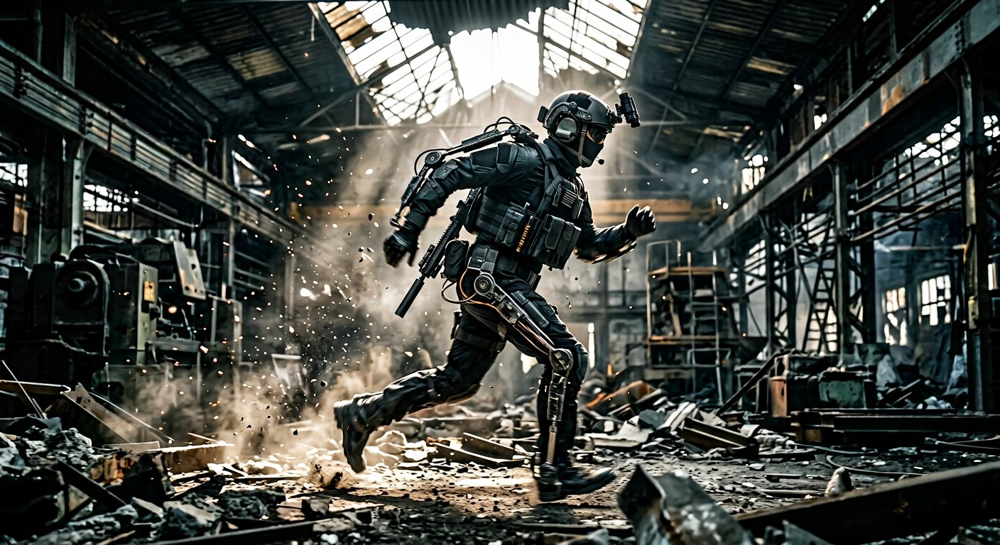
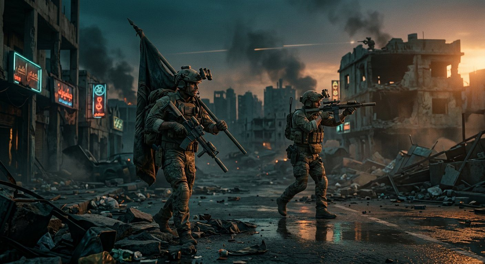
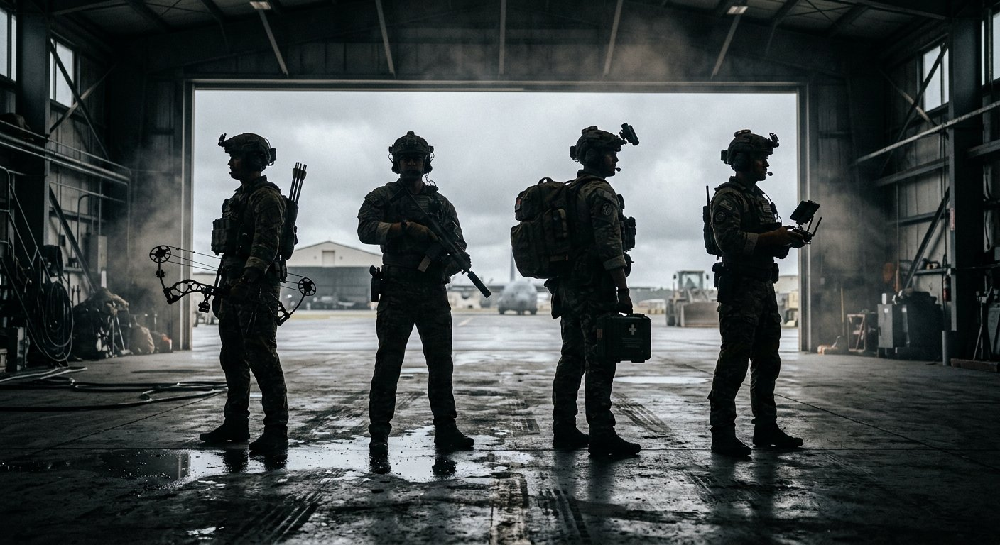
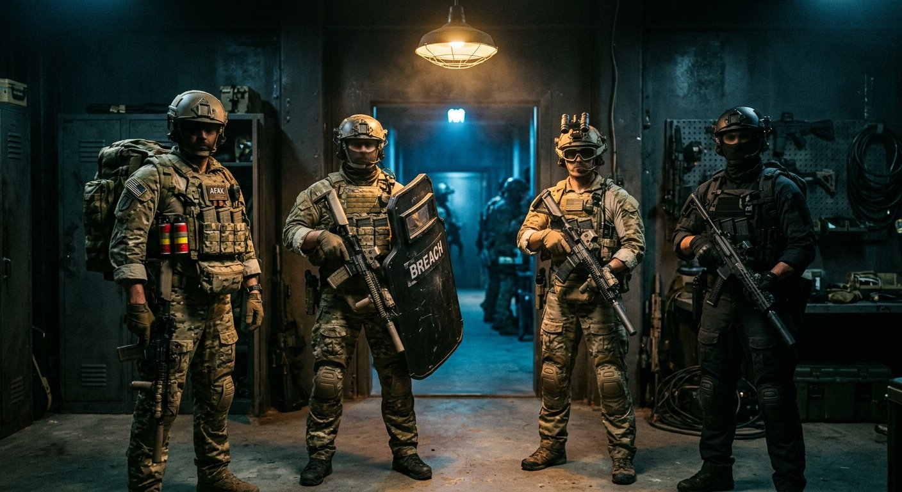

Les classements d’opérateurs circulent beaucoup et se contredisent d’un site à l’autre, souvent parce qu’ils mélangent Operations et Warfare. Ici, on part du problème à résoudre : entrer, tenir, soigner, informer.
4 classesPas de tier list officielle

Quatre classes, quatre réponses différentes au même problème : entrer, tenir, soigner, informer.
Les quatre classes, et à quoi elles servent
Assaut : ouvrir une position et survivre au premier contact. C’est la classe qui crée l’espace pour les autres. Ingénieur : contrôler le terrain et traiter les blindés, avec des gadgets qui ralentissent ou bloquent. Soutien : maintenir l’équipe debout, entre soins, relève et ravitaillement. Reconnaissance : apporter l’information avant que la poussée commence.
Une équipe qui empile trois assauts manque de relève ; une équipe sans reconnaissance entre à l’aveugle ; une équipe sans ingénieur subit les véhicules. Le déséquilibre coûte souvent plus cher que le choix individuel.
Les opérateurs qui comptent en Aurora

Martelo, assaut, la nouvelle venue
Veronica Cardozo arrive avec un kit entièrement tourné vers la fermeture de distance. Sa charge Ariete réduit les dégâts frontaux et se termine par une frappe lourde qui met à terre en touchant un ennemi ou un mur ; on peut aussi l’interrompre par un saut écrasant. Smoke Halo pose un anneau de fumée autour d’elle, ou une seule cartouche visée si on maintient la touche. Elle porte aussi une grenade explosive, et son trait Guerreira accélère déplacement et rechargement après une mise à terre ou sous un seuil de vie.
Le correctif du 12 novembre a rendu sa fumée plus discrète : l’atténuation sonore porte à cinquante mètres, et le bruit mécanique de rotation n’est audible que par elle. En clair, elle peut tourner sa fumée sans s’annoncer.

Rover, soutien, l’information par le bruit
Clover détecte désormais selon le bruit réellement produit : une course se repère de loin, une marche silencieuse beaucoup moins. Le drone peut aussi bondir sur une cible à distance. La portée de détection de la fusée éclairante est passée de quarante à quarante-cinq mètres, et Rover voit maintenant la position de Clover sur la mini-carte ainsi que les parties du corps endommagées de ses coéquipiers.

Nox, assaut, la pression
Son attaque silencieuse ne s’allonge plus quand il est le dernier survivant, et son passif de Warfare s’appelle désormais Revenant. Les valeurs de durée (vingt-cinq secondes seul, quinze secondes à deux ou trois Nox) en font une capacité à jouer en groupe plutôt qu’en héros solitaire.

N‑Two, ingénieur, le froid
Sa Cryo-Flask dure sept secondes au lieu de dix, mais inflige dix points de dégâts par demi-seconde au lieu de huit. Plus court, plus violent : à jeter dans un escalier ou une porte, là où la cible ne peut pas sortir du nuage.

Shepherd, soutien, à reconsidérer
Sa trappe sonore ne bloque plus les balles. Ce détail change son usage : elle reste un outil d’information et de ralentissement, elle n’est plus une couverture improvisée.

D‑Wolf, assaut, la mobilité
En Détonation, son exosquelette passe à cinq charges pour vingt-cinq secondes, et sa grenade fumigène voit son délai réduit à quarante-cinq secondes. En Warfare, il reste l’un des choix les plus agressifs, à condition de bouger : les duels statiques gâchent son kit.
Choisir selon le contexte
Operations, raid solo : un opérateur qui apporte de l’information ou de la survie. La reconnaissance silencieuse vaut mieux qu’un kit de brèche.
Operations, escouade : un soutien qui relève et ravitaille change le taux d’extraction plus sûrement qu’un troisième assaut.
Warfare, poussée bloquée : assaut pour ouvrir, ingénieur si le blocage vient d’un véhicule.
Détonation : un seul opérateur par équipe, donc la composition se décide avant la manche. Un doublon est refusé.

La classe utile est celle qui règle le problème du moment : entrer, tenir, soigner ou informer.
Un repère honnête : aucun taux de victoire par opérateur n’a été publié par l’éditeur. Toute affirmation du type « X est le meilleur » repose sur l’opinion d’un joueur ou d’un site, pas sur des données.
Le même opérateur ne vaut pas la même chose seul ou à trois
C’est le piège de tous les classements : ils mélangent deux jeux différents. Un opérateur dont l’atout principal profite à l’équipe perd la moitié de sa valeur quand personne ne pousse derrière. Un opérateur dont l’atout sert d’abord à soi garde toute la sienne. Le tableau ci-dessous classe les mêmes personnages dans les deux situations, en Operations.
Opérateur
Classe
À trois
En solo
Ce qui change
Luna
Reconnaissance
Très fort
Très fort
Rien : l’information sert autant seul qu’à trois, et ne demande personne derrière.
Hackclaw
Reconnaissance
Fort
Très fort
Gagne en solo : pas silencieux pour fuir, et un décodeur qui révèle l’équipement adverse avant d’engager.
Nox
Assaut
Fort
Très fort
Son ultime sert aussi de sortie de secours, ce qui vaut plus quand personne ne vient te chercher.
Morse
Reconnaissance
Fort
Fort
Meilleure ouïe du jeu et une paralysie qui gagne un duel, mais faible en extérieur.
Vyron
Assaut
Moyen à fort
Moyen
Le plus mobile des assauts : une qualité qui profite surtout à celui qui a un plan à trois.
Stinger
Soutien
Fort
Moyen
Soins et fumigènes : utile à tout le monde, décisif pour les autres.
Toxik
Soutien
Très fort
Moyen
Une amélioration de zone vaut une équipe entière ; seul, elle éclaire une pièce vide.
Sineva, Uluru, Shepherd
Ingénieur, soutien
Correct
Faible
Trois kits construits autour du travail d’équipe : à éviter pour un raid en solitaire.
La conséquence pratique est simple : si tu joues seul, choisis un opérateur dont l’atout ne dépend de personne. Si tu joues à trois avec une composition stable, choisis celui qui complète les deux autres, même s’il est moins bon dans l’absolu.

Quatre façons d’aborder la même pièce. Le classement dépend de qui entre avec toi.
Les classements de la communauté, et pourquoi il faut s’en méfier
Cherche « tier list Delta Force » et tu trouveras au moins six classements qui se contredisent, tous publiés entre septembre et novembre 2026. Ce n’est pas de l’incompétence : les listes divergent parce qu’elles ne parlent pas du même mode. Un opérateur qui domine en Warfare 32 contre 32 n’a pas la même valeur en Operations, où mourir coûte un kit.
Opérateur
Ce que la communauté en dit
Où ça se vérifie
Luna
Considérée comme le meilleur impact individuel, utile dans toutes les compositions. Son marquage à travers les murs est aussi le meilleur contre les fumigènes.
Operations, surtout en solo : l’information vaut de l’argent quand mourir coûte le sac.
Stinger
Le soutien le plus sûr et le plus recommandé aux débutants : fumigènes, pistolet de soin, stimulant, relève à pleine vie.
Warfare et Operations. Le meilleur premier achat si tu ne sais pas quoi jouer.
Nox
Flanquement silencieux, ultime qui sert aussi d’échappatoire. Un affaiblissement en septembre a réduit ses dégâts de capacité, pas son utilité de fuite.
Operations solo et duo. Plus contesté en Warfare, où certains le trouvent sans puissance de feu utilitaire.
D-Wolf
Choix le plus sûr pour Warfare : autonome, plancher de performance élevé, aucune configuration complexe.
Warfare. En Operations, la mobilité se paie parfois en discrétion.
Shepherd
Excellent en intérieur à courte portée, moins utile en extérieur. Certains le classent très haut, d’autres le descendent d’un cran.
Warfare, sur les cartes à couloirs. Sa valeur s’effondre sans équipe pour exploiter son installation.
Uluru
Décrit par plusieurs joueurs comme la meilleure réponse antichar de Warfare, très fort sur les petites cartes.
Warfare. C’est l’alternative crédible à l’ingénieur classique contre les blindés.
Tempest
Très sous-estimée selon une partie de la communauté, jugée excellente par une autre. Le désaccord est net.
Warfare. Quand deux camps aussi tranchés existent, teste-la toi-même avant d’investir.
Synthèse de classements et de fils de discussion publiés entre septembre et novembre 2026. Aucun éditeur ne publie de taux de victoire par opérateur : ces rangs sont des opinions argumentées, pas des mesures.
Comment lire un classement sans se faire avoir
Regarde le mode avant le rang. Un « S » en Warfare ne veut rien dire pour un joueur d’Operations.
Regarde la date. Un affaiblissement suffit à déplacer trois opérateurs dans la même liste.
Regarde la taille de l’échantillon. Un fil où chacun donne son top cinq n’est pas une statistique, c’est une conversation. Elle reste utile : les arguments répétés disent quelque chose du ressenti réel.
Teste le premier achat avant le deuxième. Stinger ou D-Wolf couvrent la majorité des situations. Le reste s’achète quand tu sais pourquoi.

Quatre rôles, quatre silhouettes : on choisit ce qui manque à l’équipe, pas son préféré.